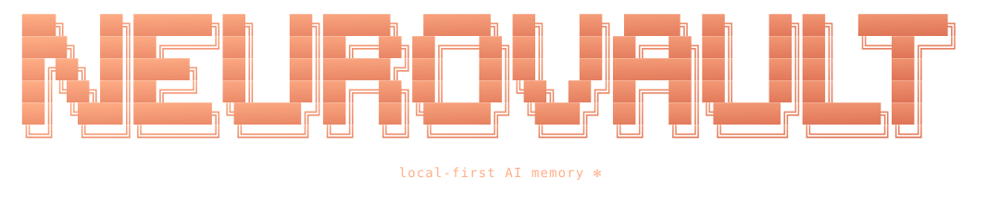

Local-first by design
No telemetry. No account. No cloud sync. The server binds to loopback only — your vault never leaves your machine unless you explicitly ship it.

Claude forgets you after every conversation. NeuroVault doesn't.
A local-first memory layer for AI agents. Notes, decisions, people, projects — captured once, recalled whenever any MCP-speaking agent asks.
Every memory is a plain .md file on your disk. The database is
just an index. If the index ever breaks, we rebuild it from the files.
You own your brain.
No telemetry. No account. No cloud sync. The server binds to loopback only — your vault never leaves your machine unless you explicitly ship it.
Force-directed layout of every note with three automatic link types —
semantic, entity, and [[wikilinks]]. Nodes sized by access
frequency, colored by strength state.
Semantic (sqlite-vec) + BM25 + knowledge-graph traversal, fused via Reciprocal Rank Fusion and reranked by a cross-encoder. Ebbinghaus-style strength decay surfaces what's recent.
Live preview, auto-save, tabs, slash commands, [[wikilink]]
autocomplete, hover previews with paragraph context, and seven themes —
Midnight, Claude, Rosé Pine, and more.
An AI synthesizes canonical wiki pages from your raw notes, gated behind a diff-based human approval. Use your own API key — or let Claude Code do it for free via the copy-pack flow.
Switch between a "work", "research", and "personal" brain with one keystroke. Point at an existing Obsidian vault and it stays in place — deleting the brain never touches your folder.
Drop one JSON snippet into Claude Desktop's config and Claude instantly has persistent memory across every conversation. Works with any MCP-compatible client.
Recall doesn't stop at the literal match — it expands to 1-hop graph neighbors with a dampened score, so a query about "MCP" can also surface the project that uses it.


⌘K is the primary nav verb. Three sections in one
palette — Commands (fuzzy), Notes (title search),
Memory (semantic recall after three characters).
Auto-saved as markdown. A file watcher triggers the ingestion pipeline — chunk, embed locally, extract entities, update the knowledge graph.
A UserPromptSubmit hook silently runs your message through an extractor.
Eight patterns catch preferences, decisions, deadlines, stacks.
Each fact becomes a first-class kind='insight' engram
with a wikilink back to where you said it.
Claude calls recall() via MCP. Hybrid search fuses
semantic, keyword, and graph hits. Cross-encoder reranks the top
candidates. Answers now carry context they couldn't have had before.
127.0.0.1:8765. It refuses connections from other machines.